Study 20 · 6 October 2026
Font and depth
Six fonts for the J, each in 2D (one layer) and 3D (stones through the depth). Pick: Unbounded, 3D. Font and depth switch at the top of the page.
Open the page (Unbounded, 3D)Six fonts, 2D and 3D
Score = how much of the font's J the stones cover, straight on (5 random Js each).
UnboundedBalooSpace GroteskFrauncesBricolageArial Black (19)
2D
0.74 0.63 0.61 0.61 0.58 0.70 0.84 · pick 0.80 0.75 · the site's font 0.77 · ball breaks off 0.79 · narrow 0.83
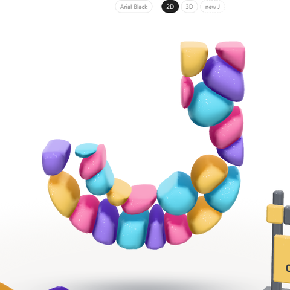
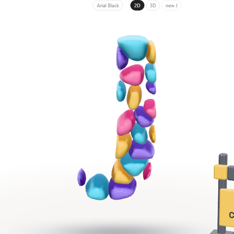
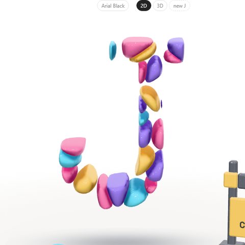
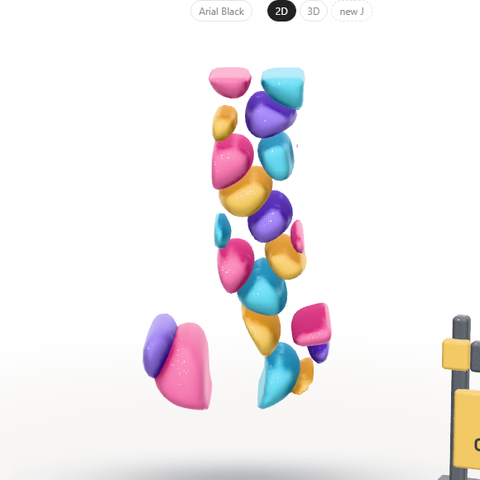
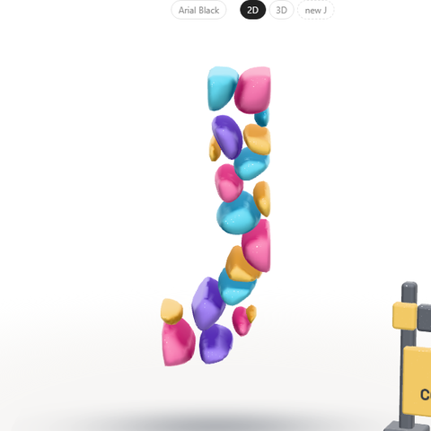
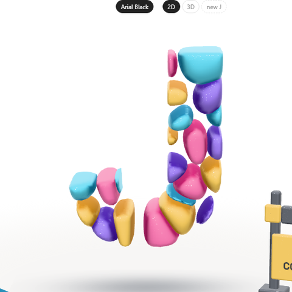
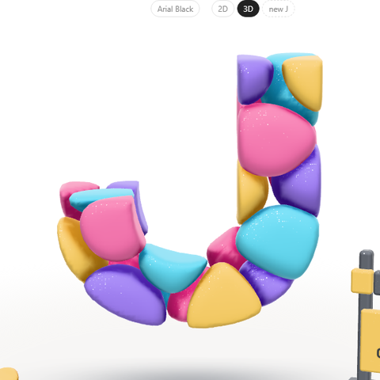
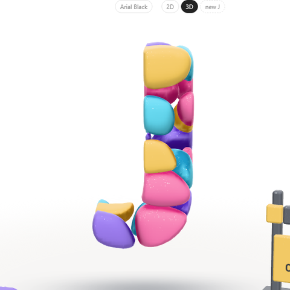
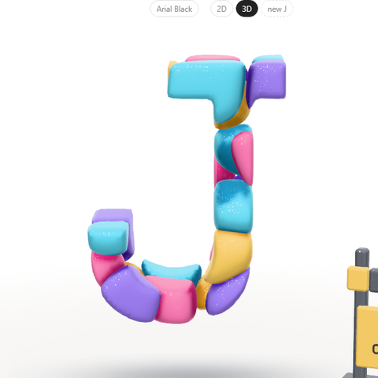
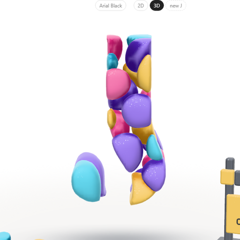
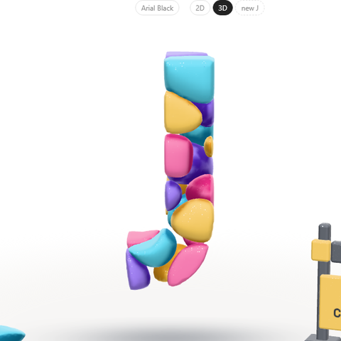
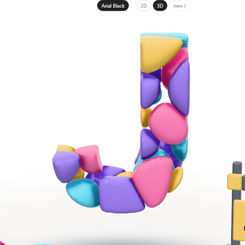
Caveat (hand) was tried too: 0.40, too thin, drops stones. 40 stones in 3D: no better than 25, 1.5× slower.
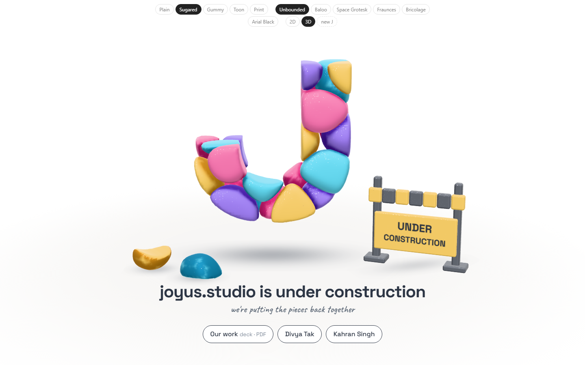
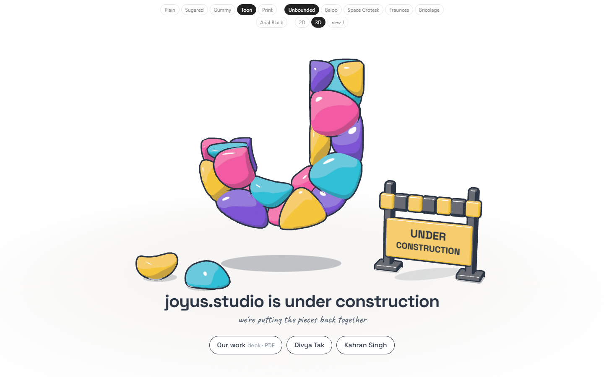
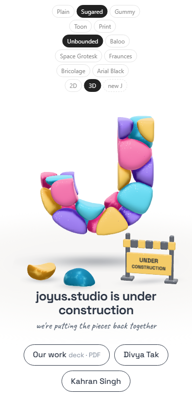
A bug from Study 16 on
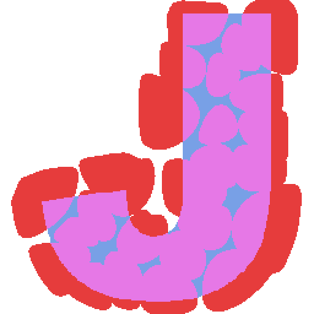
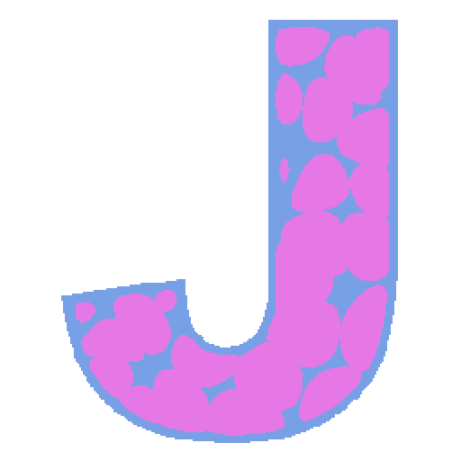
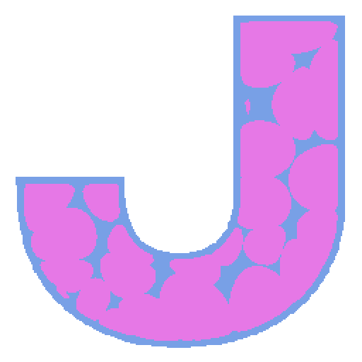
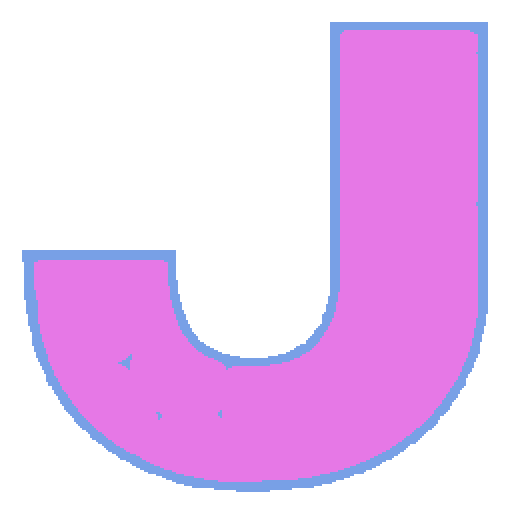
Open
- Unbounded, or Space Grotesk to match the site?
- Which look; both "under construction"s; deck link; your site; homepage only or every page.
Tests: legible.mjs (the scores), page-test.mjs (44 checks in a browser, every font × 2D/3D); read by check.cjs.